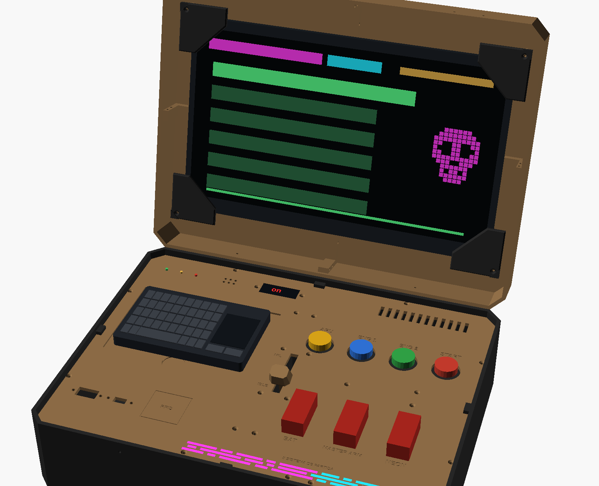
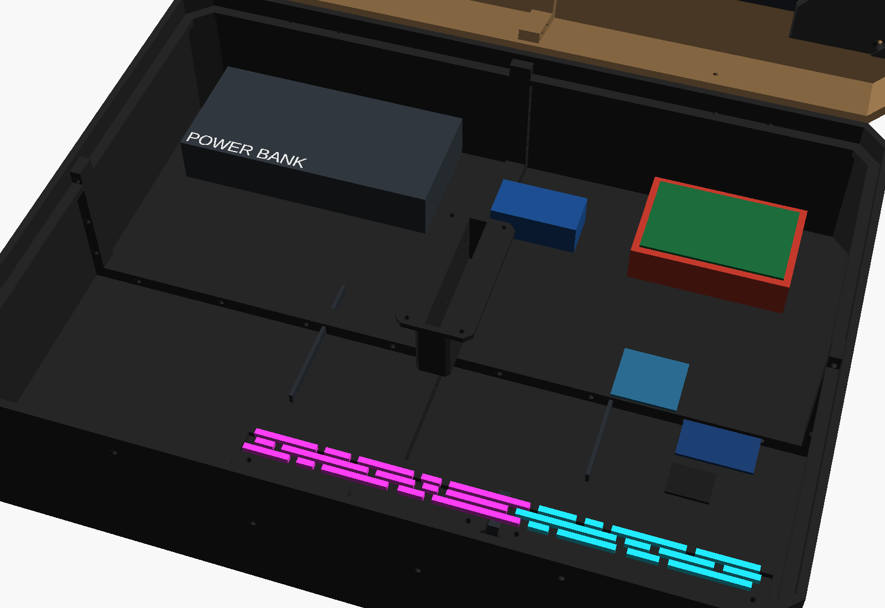

Cyberdeck BLACK BIRD
Um computador de campo numa maleta impressa, com cara de painel militar e alma DedSec: Raspberry Pi 4, monitor de 15,6″ Full HD na tampa e mini teclado, rodando os seus jogos em Python num menu de missões com glitch neon. Ele não liga com um botão: liga com uma sequência de partida de caça, com alavancas com capa, APU, motores, manete e START. Desliga com a sequência inversa, sem corromper o cartão. Medidas em milímetros.
Encoste um cartão de crédito/débito na tela e mova o controle até o retângulo ter exatamente o mesmo tamanho (85,6 × 54 mm).
px/mm01Visão geral
Duas placas: uma ESP32-C3 (a "aviônica"), sempre alimentada por uma 18650 própria, cuida do painel e decide quando o Raspberry Pi pode ligar (por um relé). Depois de ligado, o painel vira controle dos jogos e conversa com o Pi pela serial.
02A partida de caça (teste aqui)
Clique nos controles na ordem. Alavanca com capa: o 1º clique levanta a capa, o 2º liga. START: clique e segure 1 s. Errou a ordem = ABORT (desligue o MASTER ARM para recomeçar).
| Passo | Controle | O que acontece |
|---|---|---|
| 1 | BAT (alavanca com capa) | A ESP32-C3 acorda: auto-teste (todos os segmentos, LEDs e neon acendem), bipe duplo, display bAt, neon ciano "respirando" |
| 2 | MASTER ARM (alavanca com capa) | Display Arn: sistemas armados |
| 3 | APU (amarelo) | O APU "gira": A 0 → A100 em 3 s, bipes cada vez mais rápidos, LED amarelo piscando e depois fixo, neon magenta enchendo |
| 4 | ENG 1 (azul) | Motor 1 até 60% (1 60) |
| 5 | ENG 2 (verde) | Motor 2 até 60% (2 60); o display pede a manete: thr |
| 6 | MANETE para MIL | A microchave fecha: PUSH e o START começa a piscar |
| 7 | START (vermelho, segure 1 s) | Bipe longo, relé liga o Raspberry Pi: boot e neon em glitch. Quando o Pi termina de ligar, ele avisa (on) e abre o menu de missões com a abertura DedSec |
Abrt, alarme e neon vermelho; desligue o MASTER ARM e comece de novo pelo passo 2. Voltar a manete para IDLE antes do START volta um passo. 1 minuto parado num passo também volta ao começo. A alavanca NEON liga/desliga a fita a qualquer hora (não faz parte da ordem).03Desligar: sequência inversa
- MANETE em IDLE.
- MASTER ARM desligado: a ESP32-C3 manda "DESLIGAR" para o Pi; o Pi responde e desliga sozinho (o display conta
SH25…SH 0). Só então o relé corta a energia:OFF. Assim o cartão de memória nunca corrompe. - BAT desligada: o painel apaga e a ESP32-C3 dorme (gasta quase nada).
IdLE.04O cyberdeck

on, os LEDs de status, a manete, os 4 botões arcade, as 3 alavancas com capa e a barra de glitch neon acesa.
| Onde | O que vai | Medidas (mm) |
|---|---|---|
| Tampa | Monitor portátil 15,6″ Full HD (mini HDMI + USB-C), apoiado nas nervuras da tampa e preso por 4 cantoneiras impressas (1 M3 cada); as entradas dele ficam livres nas laterais | ≈ 357 × 223 × 9 |
| Painel, à esquerda | Mini teclado sem fio com touchpad, solto no rebaixo (a tampa fechada segura) | ≈ 145 × 92 × 14 |
| Painel, à esquerda (frente) | Entradas de painel USB-A (pendrive) e USB-C (carga); área do RFID (futuro) | — |
| Painel, no meio | Manete com a base e a microchave por baixo | rasgo 8,5 × 62 |
| Painel, à direita | 4 botões arcade (APU, ENG 1, ENG 2, START) e 3 alavancas MTS-102 com capa (BAT, MASTER ARM, NEON) | Ø 30 · Ø 6 |
| Painel, atrás | Display TM1637 no suporte, 3 LEDs de status, buzzer, ventilação do Pi | — |
| Painel, na frente | Barra de glitch vazada com a fita WS2812 nos 2 trilhos por baixo | ≈ 240 × 12 |
| Fundo, atrás à esquerda | Power bank 20.000 mAh (energia do Pi) | ≈ 150 × 70 × 28 |
| Fundo, atrás à direita | Raspberry Pi 4 no case com ventoinha; relé ao lado | ≈ 88 × 60 × 22 |
| Fundo, à direita | Aviônica: ESP32-C3, MCP23017, ULN2003 | — |
| Fundo, na frente | Bateria 18650 da aviônica no suporte + módulo de 5 V | 77 × 21 · 30 × 25 |
05Arquitetura
06Ligações
| De | Para | Observação |
|---|---|---|
| 18650 → módulo 5 V | C3 5V, MCP23017 (3V3 do C3), relé, ULN2003, fita WS2812, buzzer | A aviônica tem bateria própria (o power bank desliga sozinho com pouca carga) |
| Alavanca BAT | GPIO2 e GND + 100 kΩ do GPIO2 para o 3V3 | Fecha = ligada; acorda a placa |
| MASTER ARM, NEON, APU, ENG1, ENG2, MANETE (microchave KW11, contato NA), START | MCP23017 GPA0…GPA6 e GND | Pull-up interno do MCP |
| MCP23017 GPB0…GPB3 | ULN2003 IN1…IN4 → LEDs dos botões APU, ENG1, ENG2, START | LED (+) no 5 V, (−) na saída do ULN2003 |
| MCP23017 SDA/SCL | GPIO8 / GPIO9 do C3 | Endereço 0x20 (A0–A2 no GND) |
| TM1637 CLK/DIO | GPIO6 / GPIO7 | VCC no 3V3 |
| Fita WS2812 (15 LEDs) | GPIO5 por 330 Ω | 5 V do módulo; capacitor de 470 µF na entrada da fita |
| Buzzer ativo | GPIO3 → 1 kΩ → BC547 | Igual ao da bomba |
| Relé (IN) | GPIO4 | COM/NO nos fios +5 V dos 2 cabos USB-C (Pi e monitor); o GND passa direto |
| C3 GPIO21 (TX) / GPIO20 (RX) | Pi GPIO15 (RX) / GPIO14 (TX) | GND junto. Os dois trabalham em 3,3 V |
| LEDs de status (3 mm) | Pi GPIO17, 27, 22 por 330 Ω | Para os jogos |
07Software
| Arquivo | Onde roda | O que faz |
|---|---|---|
PARTIDA/PARTIDA.ino | ESP32-C3 | A sequência de partida e de desligar, display, neon, relé, alarme de ABORT, e a ponte do painel para o Pi |
pi/painel_servico.py | Pi (serviço) | Avisa "PRONTO", faz o desligamento seguro quando o painel pede, repassa botões e comandos |
pi/painel.py | Pi (biblioteca) | Para os jogos: eventos(), led(), beep(), neon(), display(). No PC, o teclado simula o painel |
pi/menu.py | Pi (abre sozinho) | Abertura glitch DedSec (caveira própria + BLACK BIRD) e o menu "SELEÇÃO DE MISSÃO" com tudo o que estiver em pi/jogos/ |
pi/jogos/teste_painel.py | Pi | Teste de cada controle (fase 4); os 5 jogos de hackeamento entram nesta pasta |
pi/instalar.sh | Pi | Instala pygame e pyserial, liga a serial, cria o serviço e o menu automático |
.py em pi/jogos/ com as linhas # NOME: e # DESCRICAO: no começo. Os 5 jogos de hackeamento (Terminal ctOS, Senha com tempo, Desarme em sequência, Dominação e Quebra de firewall) continuam planejados, agora como missões do menu.3DPeças 3D · estilo tático facetado
Todas as peças impressas, nas cores de impressão (coyote, preto e o vermelho das capas). Lista completa no 3D/LEIA-ME.txt.

08Lista de materiais
| Qtd | Componente | Função |
|---|---|---|
| 1 | Kit Raspberry Pi 4 (placa, case, microSD 32 GB, cabo micro-HDMI, fonte) | O computador |
| 1 | Monitor portátil 15,6″ Full HD (mini HDMI + USB-C) · mini teclado sem fio com touchpad · power bank 20.000 mAh 65 W com 2 USB-C | Tela, teclado e energia do Pi e do monitor |
| 1 | ESP32-C3 SuperMini (sobra do 2º kit de C3) | A aviônica da partida |
| 1 | Módulo MCP23017 (16 entradas/saídas I2C) | Lê os 7 controles e acende os LEDs dos botões |
| 1 | Display TM1637 de 4 dígitos (vermelho) | Mensagens da partida |
| 1 | Fita WS2812 60 LEDs/m (usa 25 cm, 15 LEDs) + capacitor 470 µF + resistor 330 Ω | Neon DedSec |
| 1 | Módulo relé 1 canal 5 V (do kit Uno) | Liga/desliga o Pi |
| 1 | Microchave KW11 (fim de curso, com alavanca) | Manete em MIL |
| 4 · 3 | Botões arcade 30 mm com LED (amarelo, azul, verde, vermelho) · chaves alavanca MTS-102 | APU, ENG 1, ENG 2, START · BAT, MASTER ARM, NEON |
| 1 | Bateria 18650 + suporte + módulo 18650 com saída 5 V | Energia da aviônica |
| 1 | Cabo USB-A → USB-C 3 A (cortado para passar pelo relé) | Energia do Pi |
| — | ULN2003, buzzer ativo, BC547, 3 LEDs 3 mm, resistores, extensões USB de painel, espuma | Como antes |
09Custo de produção
Valores de out/2026, sem frete, só produtos novos (links com o filtro "Novo"). Os itens novos deste redesenho são estimativas; os da maleta vêm da pesquisa anterior. Peças impressas não entram.
| Item | Onde | Menor | Maior |
|---|---|---|---|
| Conjunto: kit Raspberry Pi 4 completo (veja a nota: o de 4 GB às vezes sai mais barato) | Mercado Livre | R$ 1.100,00 | R$ 1.300,00 |
| Monitor portátil 15,6″ Full HD (USB-C + mini HDMI); achei de R$ 346 a R$ 386 em out/2026 | Mercado Livre | R$ 346,00 | R$ 450,00 |
| Mini teclado sem fio com touchpad | Mercado Livre | R$ 26,78 | R$ 79,00 |
| Power bank 20.000 mAh 65 W com 2 USB-C (estimativa; o de 22,5 W não aguenta Pi + monitor) | Mercado Livre | R$ 150,00 | R$ 250,00 |
| Conjunto: kit 4 botões arcade 30 mm com LED | Mercado Livre | R$ 70,00 | R$ 70,00 |
| Chaves MTS-102 (do kit do ANPEQ, 06) | kit do 06 | R$ 0,00 | R$ 0,00 |
| Módulo MCP23017 | Mercado Livre | R$ 15,00 | R$ 25,00 |
| Display TM1637 4 dígitos | Mercado Livre | R$ 10,00 | R$ 15,00 |
| Fita WS2812 60 LEDs/m (1 m) | Mercado Livre | R$ 25,00 | R$ 45,00 |
| Conjunto: kit microchaves KW11 (usa 1) | Mercado Livre | R$ 8,00 | R$ 15,00 |
| Módulo 18650 com saída 5 V + bateria 18650 + suporte | Mercado Livre | R$ 45,00 | R$ 75,00 |
| 2 cabos USB-C 3 A (para cortar e passar pelo relé) | Mercado Livre | R$ 10,00 | R$ 20,00 |
| ULN2003, extensões USB, parafusos, espuma | veja a pesquisa anterior | R$ 87,00 | R$ 154,00 |
| ESP32-C3, relé, buzzer, BC547, LEDs, resistores | kits do 01 e do 04 | R$ 0,00 | R$ 0,00 |
| Total (peças impressas não entram) | ≈ R$ 1.921 | ≈ R$ 2.552 | |
10Fases do projeto
partida de caça, arquitetura de 2 placas, visual militar + DedSec (esta prévia + README)
PARTIDA.ino na ESP32-C3 com o painel na protoboard, sem o Pi (o relé só "clica")
sistema, tela,
instalar.sh, serial e desligamento segurojogos/teste_painel.py: cada controle, LED, neon e displaymenu.py com a abertura glitchctOS adaptado + 4 jogos, usando o
painel.pymaleta em quartos, painel, manete, trilhos neon, cabos
carga das 2 baterias, partida, problemas comuns
11Pontos de atenção
MON_W, MON_H e MON_T no 3D/pecas.scad.